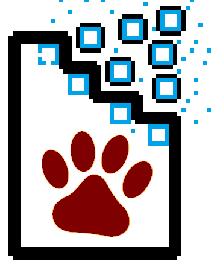

About us
Login
Register
Validate
Step 1: Hash Document
In order to verify that the document in your posession has not been tampered with, you must first hash the document (convert it to a fixed size with SHA 256 encryption) in its current state. This can easily be done at
conversion-tool.com
. Keep the hash open.
Step 2: Look-up Transaction
Searching for a transaction on the bitcoin blockchain is very simple. Go to
blocktrail.com
, explorer, and enter the transaction ID on your BarkChain receipt. Keep this tab open.
Step 3: Compare Hash Values
Compare the hash obtained in Step 1 with the hash on your BarkChain receipt.
If the transaction could be looked up, and the hash values match, the document you posess is original and encrypted on the blockchain.